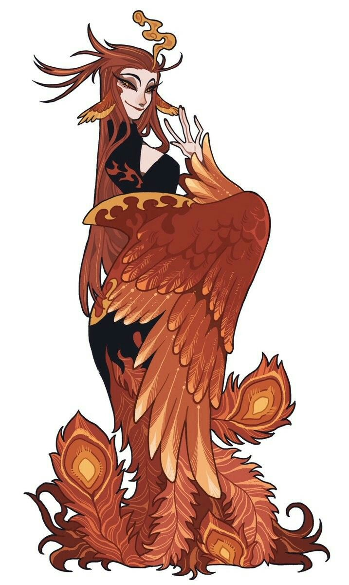
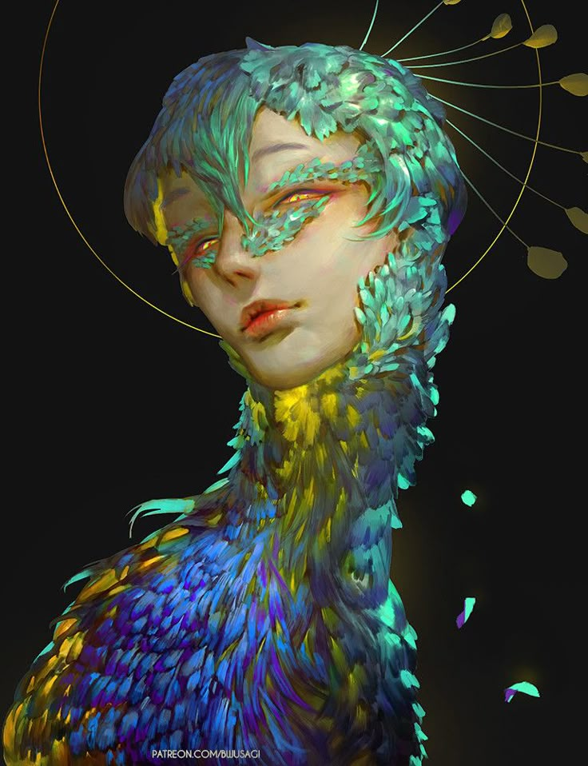
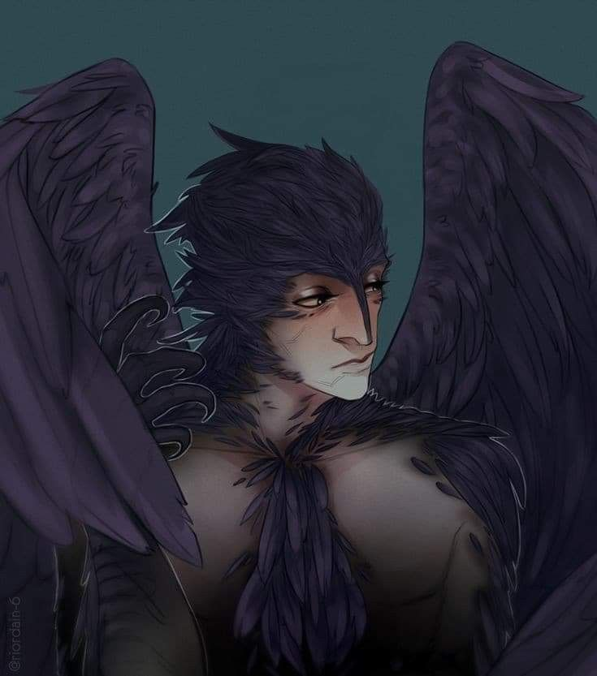
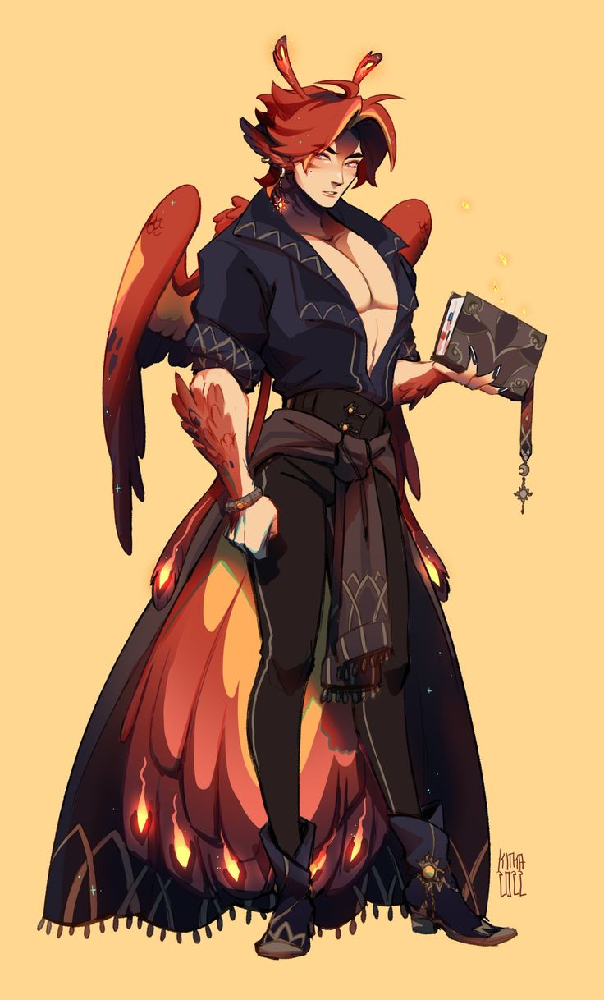

A Dinastia Fênix é a família real que governa o Reino Flutuante desde que os Bico de Ferro venceram a guerra que fundou este céu. Descendentes de aarakocras tocados pela bênção de Kaambal, seus membros carregam títulos ligados ao fogo e ao renascimento — cada geração provando, mais uma vez, que das cinzas sempre se ergue algo novo.
✦ nomenclaturas reais
Os Títulos da Linhagem
PHOENIXBORN
Renascido da Fênix
Título concedido ao Antigo Monarca — aquele que já ardeu no trono e se ergueu das próprias cinzas para ceder lugar ao seguinte. A prova viva de que o fogo da dinastia nunca se apaga por completo.
EMBERCROWN
Coroa em Brasas
Título do Monarca Atual — aquele cuja chama arde mais alta e mais quente. Governa no calor do próprio fogo, sustentando a corte enquanto ele durar.
RISINGFLAME
Chama Ascendente
Título do Futuro Monarca — a fagulha que ainda cresce, mas que um dia será o próprio incêndio. Carrega a promessa de uma coroa que ainda arde baixo.
ASHLIGHT
Luz de Cinzas
Título genérico para membros reais sem posição de sucessão direta — incluindo consortes e parentes próximos. Brilham junto à fogueira, mas não são seu centro.
✦ CHAMA DO TRONO

✦ família real fênix
Ignes Fênix
Herdeira direta do sangue que venceu a Guerra dos Phyton, Ignes carrega em cada pena o peso da vitória que fundou o Reino Flutuante. Rainha desde jovem, governa com a mesma frieza calculada que a sustentou nos dias mais sombrios do conflito oculto contra os remanescentes Phyton. Mãe de Flangrans e companheira de Bellos, seu maior orgulho não é o trono — é a certeza de que, das cinzas de qualquer queda, sua linhagem sempre renasce.

✦ família real fênix
Bellos Fênix
Vindo de um bando distante, cujas penas nunca combinaram com o vermelho tradicional da Dinastia Fênix, Bellos foi recebido com desconfiança antes de conquistar seu lugar ao lado de Ignes. Rei sereno onde ela é intensidade, é o contrapeso silencioso que mantém a corte em equilíbrio. Dizem que foi ele quem primeiro insistiu em trazer Latens para dentro dos muros do palácio — uma decisão que a corte inteira ainda debate.
✦ CONSORTE

✦ família real fênix
Latens
Seu nome, em língua antiga, significa "oculto" — e poucos na corte sabem realmente quem ele é ou de onde veio. Aceito como concubino do casal real, Latens habita as sombras do palácio com a mesma naturalidade com que suas asas escuras se confundem com a noite. Não governa, não sucede, não é ouvido nos conselhos — mas nenhuma decisão importante da Dinastia Fênix é tomada sem que ele esteja, silenciosamente, por perto.
✦ HERDEIROS

✦ família real fênix
Flangrans Fênix
Nascido já envolto em fumaça e expectativa, Flangrans cresceu entre grimórios e penas incandescentes, mais interessado nos segredos da magia que herdou do que nas cerimônias do trono. Como Chama Ascendente, seu destino já está traçado — mas seus olhos sempre voltam para os livros antes da coroa.